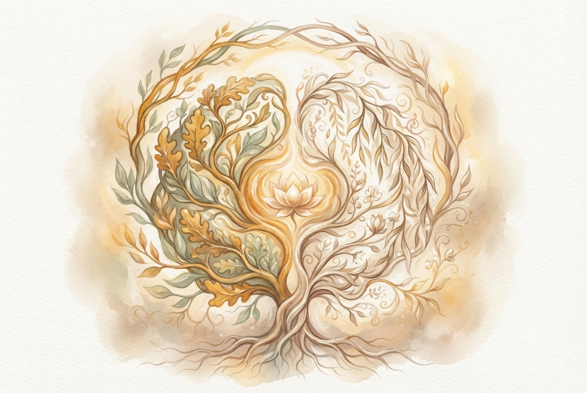
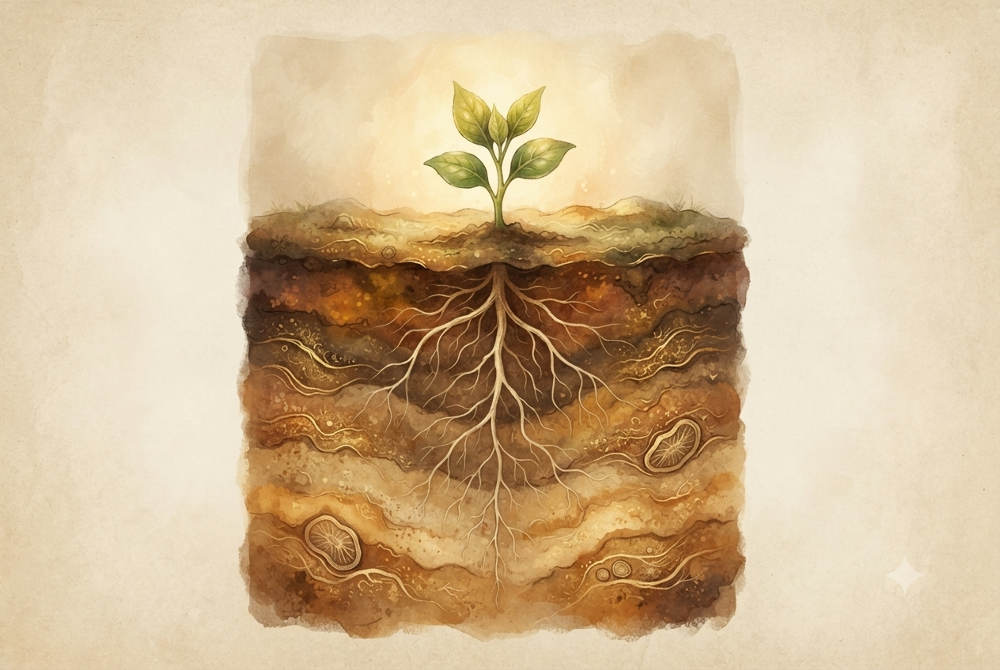
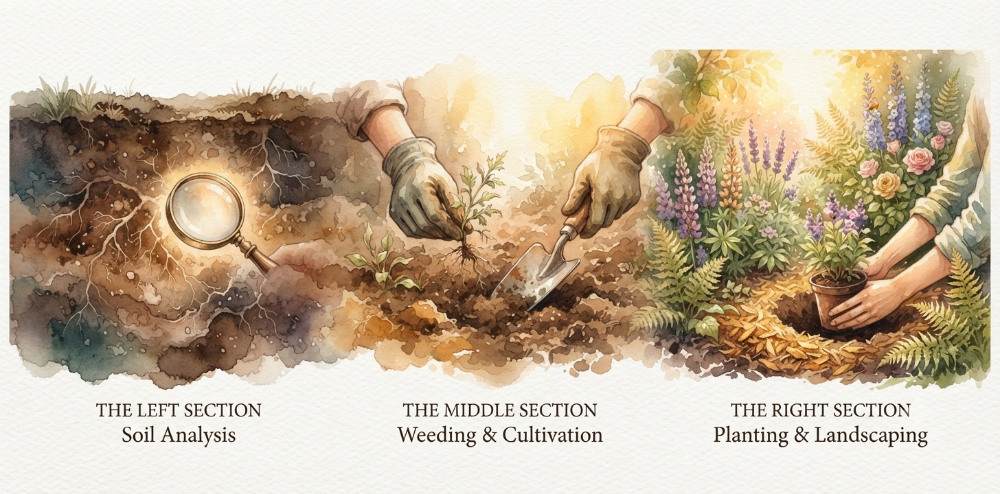

🧠 Elme
Strukturált kérdésekkel tisztázza a jövőbeli célokat és lebontja a korlátozó hiedelmeket.
„Abban segítem a hozzám fordulókat, hogy mélyebben megismerjék és megértsék Önmagukat, és ezáltal egy szabadabb, önazonosabb életet tudjanak élni.”
Az elmúlt tíz évem a saját önismeretem szempontjából arról szólt, hogy különböző módszerek segítségével – mint a kineziológia, a coaching, a Recall Healing, a pszichodráma, a családállítás, az egyéni terápia, a meditáció, a jóga, a bodywork és az újjászületés csoport – egy mély és átfogó képet kapjak magamról, a családomról, a működésemről és az elakadásaimról. Szerettem volna tisztán látni az ismétlődő párkapcsolati mintáimat, a fel nem dolgozott gyermekkori traumáimat, a transzgenerációs terheimet és azoknak az életemre gyakorolt hatásait. Érteni akartam a depressziómat, a szorongásomat, a pénzügyi nehézségeimet, az indokolatlanul felszínre törő agressziómat, valamint a visszatérő fizikai tüneteimet, a sérüléseimet és a baleseteimet.
A folyamat során rengeteg dolgot megértettem abból, hogy a fel nem dolgozott családi traumák milyen mély hatással voltak az életemre és a működésemre. Megláttam, hogy a fel nem dolgozott veszteségek hogyan okoztak nálam figyelemzavart és tanulási nehézségeket, és hogy a felmenőim sorsával való azonosulás hogyan korlátozott abban, hogy egy önazonos életet tudjak élni.
Ezeknek a módszereknek és a saját belső utamnak köszönhetően alakult ki az a holisztikus szemlélet, amellyel ma a hozzám forduló emberek problémáit és elakadásait megközelítem, hogy a legjobb tudásom szerint segítsem őket a valódi változásban.
A life coaching egy mély, személyre szabott önismereti és jövőorientált fejlesztő folyamat, ahol a kliens (coachee) teljes, osztatlan figyelmet kap. Ez egy egyenrangú partnerségen alapuló közös felfedezés: a kliens hozza a kérdést vagy elakadást, a coach pedig segít felszínre hozni a válaszokat és a belső potenciált. A folyamat nem kész válaszokat vagy tanácsokat ad, hanem cselekvésorientált megközelítéssel segít kilépni a megszokott gondolkodási sémákból, hogy új utakat és megoldásokat találj.
Strukturált kérdésekkel tisztázza a jövőbeli célokat és lebontja a korlátozó hiedelmeket.
Segít azonosítani, tudatosítani és átérezni a belső mozgatórugókat vagy gátakat.
A biztonságos térben a coach segít megjeleníteni a témádat akár mozdulatokban, akár konkrét szituációkban, így a változás fizikai szinten is rögzül.
A coaching azért rendkívül hatékony, mert a megoldások nem kívülről érkező sablonok. Mivel a válaszokat te magad dolgozod ki és érzed át, sokkal nagyobb elkötelezettséggel fogod megtenni az elérésükhöz szükséges valós, gyakorlati lépéseket is.
A kineziológia One Brain (Egy agy) módszere egy olyan holisztikus, személyiség- és képességfejlesztő stresszoldó rendszer, amely a bal és jobb agyfélteke működésének összehangolására, valamint a múltbeli érzelmi traumák feloldására fókuszál. A módszert a Three in One Concepts alapítói (Gordon Stokes, Daniel Whiteside és Candace Callaway) fejlesztették ki az 1980-as évek elején.

A koncepció szerint stressz vagy trauma hatására a két agyfélteke közötti kommunikáció blokkolódik. A logikus, elemző bal agyfélteke és a kreatív, érzelmi jobb agyfélteke integrációja megszűnik, így az egyén beszűkült döntési helyzetbe kerül – a múltbeli sémák alapján automatikusan reagál, ahelyett, hogy új, szabad választásokat hozna. A módszer célja ennek az egységnek (az „Egy Agynak") a visszaállítása.
Miután fény derült a kiváltó okra és a hozzá kapcsolódó érzelmekre, a kineziológus gyengéd korrekciós technikákat alkalmaz. Ezek lehetnek egyszerű mozgásos gyakorlatok, vizualizációk, finom energetikai érintések (például a homlok-tarkó tartás) vagy a szemmozgások integrációja. A folyamat végén a kliens gyakran kap otthoni, megerősítő házi feladatokat az új energetikai egyensúly rögzítésére.
A Recall Healing (Emlékezés általi gyógyulás) egy olyan holisztikus, rendszerszemléletű módszer, amely a betegségek, lelki elakadások és viselkedési minták mögött meghúzódó tudatalatti érzelmi konfliktusokat tárja fel és oldja fel. Alapítója Gilbert Renaud kanadai terapeuta, aki a módszert a Dr. Ryke Geerd Hamer-féle Új Germán Medicína (GNM), Claude Sabbah biológiai totál deprogramozása, valamint saját több évtizedes klinikai tapasztalatai alapján fejlesztette ki.

A Recall Healing szerint a betegség nem a szervezet hibája vagy véletlenszerű meghibásodás, hanem az agy túlélési programja egy biológiai sokkra. Amikor egy egyén olyan intenzív stresszt, traumát vagy érzelmi konfliktust él meg, amelyet tudatosan képtelen feldolgozni vagy kifejezni, az agy – a túlélés érdekében – „letölti" ezt a feszültséget a testbe, és egy szerv szintjén jeleníti meg (somatisatio). A módszer alapvetése: „Ami nem jut el a tudatig, az biológiai formát ölt." Ha a páciens tudatosítja és kibeszéli a konfliktust, a testnek már nincs szüksége a fizikai tünetre a túléléshez, így elindulhat a valódi gyógyulás.
Minden szervünk és szövetünk egy meghatározott típusú érzelmi konfliktushoz kapcsolódik. Például az elválasztási konfliktusok gyakran a bőrt érintik, míg a birtokviták vagy a fészek elvesztése a szív- és érrendszert, illetve a tüdőt terhelhetik.
A Recall Healing kiemelt figyelmet fordít a születés előtti 9 hónap, a születés, és az azt követő első életév eseményeire. Az ebben az időszakban a szülők által megélt stressz, ki nem mondott vágyak vagy traumák tudatalatti forgatókönyvként (projektként) határozhatják meg a gyermek későbbi életét és betegségeit.
A módszer szerint a meg nem oldott családi traumák, titkok, korai halálesetek vagy igazságtalanságok generációkon át öröklődnek. Az utódok gyakran tudat alatt ismétlik meg a felmenők sorsát vagy betegségeit, hogy szimbolikusan „megoldják" a múltbeli konfliktust.
A kliens életében ciklikusan ismétlődő események és traumák matematikai pontosságú elemzése, amely segít rávilágítani az első, programozó jellegű élményre.
A Recall Healing nem kezel és nem diagnosztizál orvosi értelemben, hanem egyfajta „biológiai detektívmunkaként" működik. A konzulens célzott kérdésekkel, a kliens élettörténetének, családfájának és orvosi diagnózisának elemzésével segít megtalálni azt a konkrét pillanatot és érzelmet, amely a tünetet elindította. A gyógyulás kulcsa a megértés, az őszinte szembenézés és az érzelmi feszültség elengedése.
Képzeld el, hogy a jelened és a jövőd egy gyönyörű, virágzó kert, ahol szeretnél végre megpihenni, élvezni a napsütést és leszüretelni a lédús gyümölcsöket. De a valóságban a növényeid folyton elszáradnak, felveri a gaz a birtokot, a talaj pedig csontszáraz és repedezett.

Recall Healing
Hiába locsolod a növény felszínét, ha a mélyben valami rágja a gyökerét. A Recall Healing a talajvizsgálatod. Segít leásni a föld alá, és megmutatja, hogy a mai elakadásaid (például az állandó aggódás vagy a párkapcsolati kudarcaid) milyen mélyen fekvő, régi rétegekből táplálkoznak. Kideríti, hogy gyerekkorodból vagy a családfádból milyen kiszáradt, mérgező táptalajt („rossz mintákat") örököltél, ami miatt a jelenedben nem tudnak szárba szökkenni a terveid.
Kineziológia
Ha már látod, miért nem terem a föld, nem elég csak nézni, szabaddá kell tenni a terepet. A kineziológia a legfontosabb kerti szerszámod. Az izomteszt segítségével pontosan odanyúl, ahol a legsűrűbb a gaz, és gyökerestül húzza ki a régi fájdalmat, a traumát és a beragadt stresszt a testedből és a lelkedből. Fellazítja a megkeményedett földet (az idegrendszeredet), hogy a tápanyag és az életenergia újra szabadon áramolhasson benned.
Life Coaching
Most, hogy a föld tiszta, puha és tele van tápanyaggal, eljött az idő, hogy kitaláld, mit szeretnél termeszteni. A coaching a tájépítészed és a magvetőd. Nem engedi, hogy a kiszedett gazt sirasd, hanem azt kérdezi: „Milyen virágokat szeretnél látni? Milyen gyümölcsöket akarsz szüretelni?" Segít megtervezni az új ágyásokat, kialakítani a gondozási rutinokat és a határaidat, hogy a mindennapi tetteidből végre egy dús, zöldellő, harmonikus élet fejlődjön ki.
Ezzel a hármassal nemcsak műanyag virágokkal díszíted fel a kertedet, hanem valódi, élő oázist teremtesz. A Recall Healinggel átvilágítod a talajhibákat, a kineziológiával kitisztítod a múlt béklyóit, a coachinggal pedig felneveled azt a virágzó jövőt, amelyben végre büszkén és boldogan élhetsz.
Email: info@szepesidaniel.hu
Telefon: +36 30 123 4567
Hely: Budapest